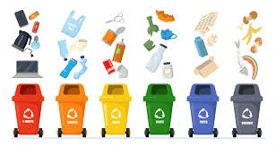
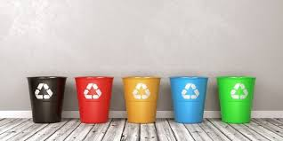

Inicio
tipos y colores
ciclo de reciclaje
manualidades recicladas
¿Qué es el reciclaje?
El reciclaje torna los materiales que se hubiesen convertido en desecho en recursos valiosos.
De hecho, el recolectar los materiales reciclables es tan sólo un paso en una serie de acciones
que generan una serie de ganancias desde el punto de vista financiero, ambiental y de la sociedad.
¿Por qué es importante reciclar?
El reciclaje es importante porque ayuda a conservar recursos naturales, reduce la contaminación
, disminuye la acumulación de residuos en vertederos y contribuye a mitigar el cambio climático.
También genera empleos y reduce los costos de producción, según Gob.mx y BBVA.
 
ELABORADO POR ALEXANDER GARCIA GARCIA Y CARLOS ALBERTO SANCHEZ REYES DEL GRUPO:602,A 29 DE MAYO DEL 2025